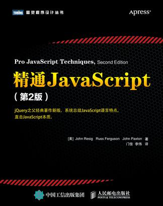
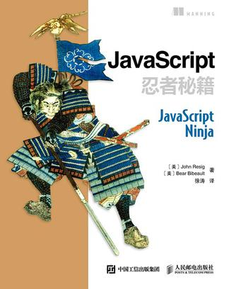
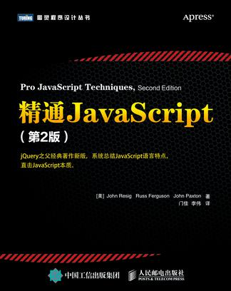
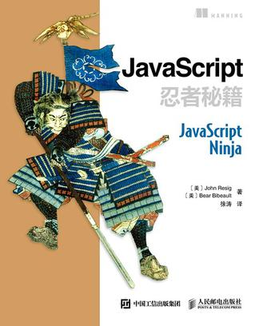
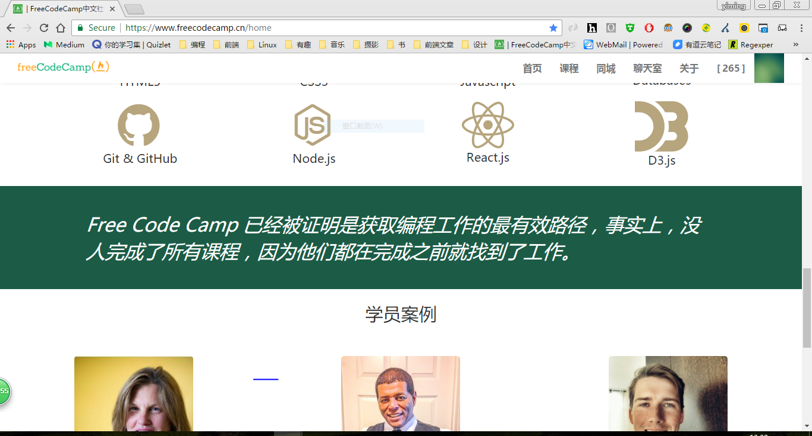

Step 0: 前端入坑那点事儿
Step 1: 每个人接触前端都有一段故事
- 从软件测试开始接触到Web
- 改变方向学习java
- 改变方向学习前端
Step 2: 当我碰上前端
- 我发现前端很适合自己
- 前端就是我所要做的职业
- 我发现前端前景一片光明
Step 3: 我为什么看好前端？
- 移动端混合编程成为普遍开发方式。跨平台，高效率。
- 新技术更新快，具有活力，发展空间当然大。
- JS很强势
Step 4: JavaScript到处运行
- 浏览器客户端
- NodeJS服务器端
- 硬件。例如三星的物联网框架IoT.js and JerryScript(运行在硬件上的js引擎)
JS已经可以到处跑了^_^。想象一下js运行在冰箱、电灯、电饭煲里。
Step 5: 从看书开始
- JavaScript高级程序设计（第3版）
- 精通JavaScript（第2版）（John Resig）
- JavaScript忍者秘籍（John Resig）
 



Step 6: freeCodeCamp (Go to)
Step 7: 从GitHub开始
- GitHub上有非常多的项目可以拿来学习
- GitHub上积累自己的项目。有成就感的同时积累技术。
- 目标：使用GitHub来做自己的简历，同时分享自己的东西。
Step 9: 阅读代码
- 捋清楚整个目录结构，全局观
- 从主要的入口js文件或者主程序入手
- 主程序下从头走一遍思路，函数调用知道作用就好，先不必深究
- 细化各功能